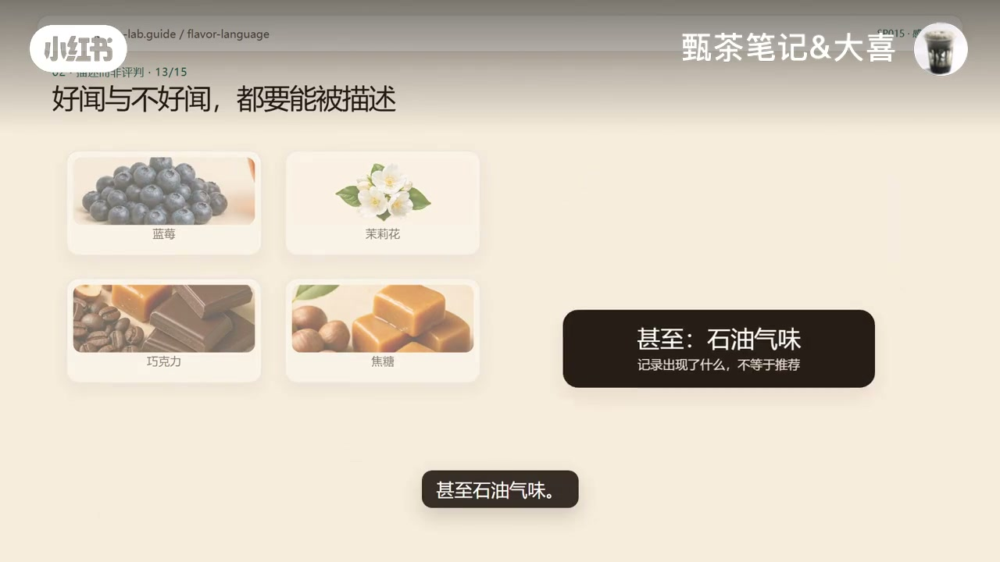
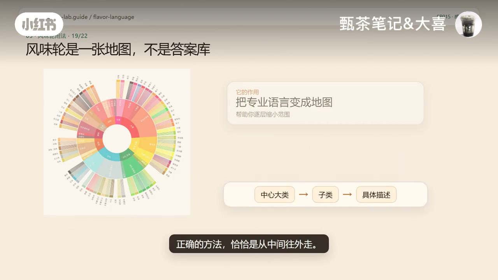
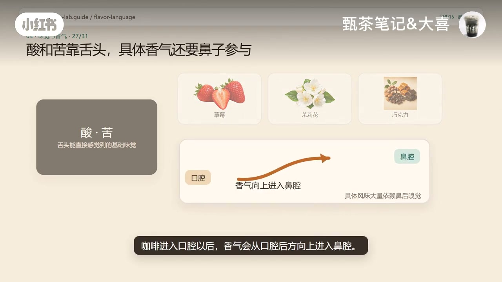
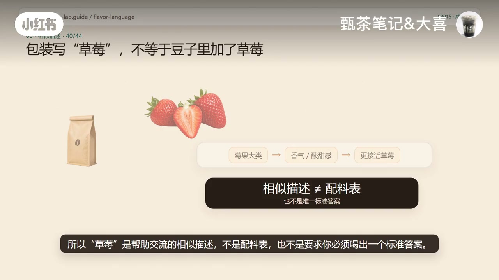

内容要点
小红书账号「甄茶笔记&大喜」拆开一句常见口号：咖啡是不是真有「110 种香气」？视频先给答案——110 指的是世界咖啡研究组织（WCR）感官词典第一版里的 110 个感官属性，不只香气，也含酸苦与口感质地，而且是会更新的活词典，不是天花板。接着说明风味轮是把这套语言画成地图，用法应从中间往外；新手只喝到酸苦很正常，具体风味多半靠鼻后嗅觉与感官记忆；包装上的「草莓」是相似描述，不是配料表。下列实录按时间线展开；观点均标注为作者口播与画面。
知识结构
包装写草莓茉莉，却只喝到酸苦；弄不清时风味轮会让人更怀疑自己。
110=WCR 词典感官属性数，不是香气总数；105 样品整理的活词典，非上限。
也收录霉味泥土味甚至石油气味；只描述出现了什么与强度，不自动打分。
地图不是答案库；从中心大类往外走到子类与具体水果，可停在任一层。
酸苦靠舌头；具体香气多靠鼻后通路；风味词是「更像什么」不是完全相同。
咖啡师差在感官记忆与参考物校准；草莓是交流用相似描述，加味豆另判。
厨房参考物先练闻；110 非天花板，风味轮非标准答案——先问自己感受到了什么。
别把「110」当成香气排行榜或上限；别拿风味轮从外圈对答案。先描述大类，再细化；包装风味词是沟通语言。想练就从橙子柠檬杏仁黑巧这类厨房参考物开始建立气味记忆。
00:00–00:12开场：包装很香，嘴里却只剩酸和苦
标题直接抛出问题：咖啡真的有 110 种香气吗？画面用风味轮和一杯黑咖啡把「香气语言」摆上台面，随即落到日常挫败感——包装上写着草莓、茉莉花，喝起来却只感到酸和苦。
作者把观众的自我怀疑压成二选一：到底是豆子在吹牛，还是你的味觉不够好？并提醒：如果这件事没弄明白，风味轮不但帮不了你，反而会让你越喝越怀疑自己。（转录里「钟伟伦」按全片语境校正为「风味轮」。）
00:12–00:49先说答案：110 不是香气总数，也不是上限
答案来得很早：咖啡并不是「只有 110 种香气」。所谓 110，指的是世界咖啡研究组织（WCR）建立的咖啡感官词典第一版里的 110 个感官属性——里面不只有香气，还包括酸、苦等味觉，以及和口感、质地有关的描述。
作者继续拆第二层误解：这 110 也不是咖啡风味的上限。研究人员当时花了超过 100 个小时，评估来自 13 个国家的 105 个阿拉比卡样品，才整理出这套词典；WCR 自己也明确说，它是一份会继续更新的活词典——因为 105 支咖啡不可能代表全世界所有咖啡。
00:49–01:14好闻不好闻都要能写：尺子，不是排行榜
更反常识的一点是：词典里不只有蓝莓、茉莉花、巧克力和焦糖，还有霉味、泥土味，甚至石油气味。画面用「记录出现了什么，不等于推荐」点明立场。
为什么研究品质还要写这些不讨喜的味道？因为感官词典的任务，不是告诉你哪种风味更高级、哪种豆子更值钱；它首先只回答一件事——这杯咖啡里出现了什么感觉，强度大概有多少。它是一把用来描述和测量的尺子，不是一张自动评分表。

01:14–01:46风味轮是地图：从中间往外走
那常见的咖啡风味轮又是什么？作者把它理解成：把这套专业语言整理成一张更容易使用的地图。它以 WCR 感官词典为重要基础，但正确用法不是拿着包装从最外圈开始找「草莓在哪里」。
正确方法恰恰是从中间往外：先喝一口，只判断大方向——像水果，还是像坚果、可可；如果像水果，再判断是莓果、核果还是柑橘；确定像柑橘以后，再分辨更像葡萄柚、橙子、柠檬还是青柠。你可以停在任何一层，不必每次都猜到最具体的水果。

01:46–02:46新手只喝到酸苦很正常；风味多半是「闻到的」
所以新手只喝到酸和苦非常正常：酸和苦是舌头能直接感觉到的基础味觉；而草莓、茉莉花、巧克力这类具体风味，往往还需要鼻子一起参与。咖啡进入口腔以后，香气会从口腔后方向上进入鼻腔——你以为自己在尝草莓，其实很大一部分信息是闻到的。
作者用「苦」做类比：黄连是苦的，黑巧克力也是苦的，但入口绝不会让人觉得是同一种苦，因为最终感受还混合了香气、强度、口感和余味。风味词也是同样道理：它描述的是一整组感觉更像什么，不是说两样东西的味道完全相同。

02:46–03:15咖啡师差在记忆库；包装「草莓」不是配料表
为什么咖啡师能说出蓝莓、红茶、茉莉花，你却只能说「挺酸、还挺香」？作者认为不一定是舌头更灵，更多时候是感官记忆不同——他们反复闻、反复比较，还会用标准参考物去校准「大家说的蓝莓大概指怎样一种感觉」。训练的目的，是把「这个味道很熟」变成「它更接近什么」。
包装上写草莓，通常也不是说豆子里真的加了草莓，更不是喝起来和草莓汁一模一样。对普通没有额外加味的咖啡，更准确的理解是：先感受到莓果这一大类特征，再往下判断它在香气、酸甜感或整体组合上更接近草莓。所以「草莓」是帮助交流的相似描述，不是配料表，也不是要求你必须喝出一个标准答案；明确加味或使用外源共发酵的咖啡，则要另外判断。

03:15–04:05厨房参考物怎么练；真正会用风味轮问什么
普通人怎么练？不用先买一整套专业工具。准备橙子、柠檬和葡萄柚，再放一点杏仁、花生、黑巧克力和红糖；先分辨闻，再闭上眼睛重新闻，慢慢给这些气味建立记忆。下次喝咖啡时，也别逼自己立刻说出水蜜桃——先判断是水果类还是坚果可可类，再从水果走到柑橘，从柑橘走到橙子。
收束句很清楚：110 不是咖啡香气的天花板，风味轮也不是标准答案；它更像一本词典，帮助你把「我感觉有点香」一步步说成「像水果、像柑橘，最后有点像橙子」。真正会用风味轮，不是拼命寻找包装上的答案，而是先问自己：我现在到底感受到了什么？片尾留下互动：你喝咖啡时，最容易认出来的是水果、花香，还是坚果巧克力？
详细文字转录（129段）
以下内容按 Whisper 原始分段完整呈现，可能包含识别误差；正文已按画面与语境校正（如风味轮、霉味、核果、黄连、没有额外加味），转录区保持原样以便核对。
咖啡真的有110种香气吗
包装上写着草莓 茉莉花
你却只喝到酸和苦
到底是豆子在吹牛
还是你的味觉不够好
如果这件事没弄明白
钟伟伦不但帮不了你
反而会让你越喝越怀疑自己
先说答案
咖啡并不是只有110种香气
110指的是世界咖啡研究组织
也就是WCR建立的
咖啡感官词典第一版里的
110个感官属性
这里面不只有香气
还包括酸 苦等味觉
以及和口感 质地有关的描述
而且这110也不是咖啡风味的上限
研究人员当时花了超过100个小时
评估来自13个国家的
105个阿拉比卡咖啡样品
才整理出这套词典
WCR自己也明确说
它是一份会继续更新的活词典
因为105支咖啡
不可能代表全世界所有咖啡
更反常识的是
这份词典里不只有
蓝莓 茉莉花 巧克力和焦糖
还有莓味 泥土味 芬味
甚至石油气味
为什么研究咖啡品质
却要把这些不讨喜的味道也写进去
因为感官词典的任务
不是告诉你哪种风味更高级
哪种豆子更值钱
它首先只回答一件事
这杯咖啡里出现了什么感觉
强度大概有多少
它是一把用来描述和测量的尺子
不是一张自动评分表
那我们常见的咖啡风味轮又是什么
你可以把它理解成
把这套专业语言
整理成一张更容易使用的地图
它以WCR感官词典为重要基础
但不是让你拿着包装
从最外圈开始找草莓在哪里
正确的方法恰恰是从中间往外走
先喝一口
只判断大方向
像水果
还是像坚果、可可
如果像水果
再判断是莓果、甘果
还是柑橘
确定像柑橘以后
再继续分辨更像葡萄柚、橙子
柠檬还是青檸
你可以停在任何一层
不必每次都猜到最具体的水果
所以新手只喝到酸和苦非常正常
酸和苦是舌头能直接感觉到的基础味觉
而草莓、茉莉花、巧克力这类具体风味
往往还需要鼻子一起参与
咖啡进入口腔以后
香气会从口腔后方向上进入鼻腔
你以为自己在尝草莓
其实其中很大一部分信息是闻到的
这件事可以用苦来理解
黄莲是苦的
黑巧克力也是苦的
但它们入口以后
绝不会让你觉得是同一种苦
因为我们最后感受到的
不只有舌头接收到的苦味
还混合了香气、强度、口感和余味
风味词也是同样的道理
它描述的是一整组感觉更像什么
不是说两样东西的味道完全相同
那为什么咖啡师能说出蓝莓、红茶、茉莉花
你却只能说挺酸、还挺香
不一定是它们的舌头更灵
更多时候是感官记忆不同
它们反复闻、反复比较
还会用标准参考物去校准
大家说的蓝莓大概指的是怎样一种感觉
训练的目的是把这个味道很熟
变成它更接近什么
包装上写草莓
通常也不是说豆子里真的加了草莓
更不是说它喝起来和草莓汁一模一样
对普通莓有额外加味的咖啡来说
更准确的理解是
先感受到莓果这一大类特征
再往下判断
它在香气、酸甜感或整体组合上更接近草莓
所以草莓是帮助交流的相似描述
不是配料表
也不是要求你必须喝出一个标准答案
明确加味或使用外源共发酵的咖啡
则要另外判断
普通人怎么练
不用先买一整套专业工具
准备橙子、柠檬和葡萄柚
再放一点杏仁、花生、黑巧克力和红糖
先分辨闻,再闭上眼睛重新闻
慢慢给这些气味建立记忆
下次喝咖啡时
也别逼自己立刻说出水蜜桃
先判断是水果类还是坚果可可类
再从水果走到柑橘,从柑橘走到橙子
最后记住
110不是咖啡香气的天花板
风味轮也不是标准答案
它更像一本词典
帮助你把我感觉有点香
一步步说成像水果、像柑橘
最后有点像橙子
真正会用风味轮
不是拼命寻找包装上的答案
而是先问自己
我现在到底感受到了什么
你喝咖啡时
最容易认出来的是水果、花香
还是坚果巧克力
关注我
下一期继续把咖啡里
最容易混淆的概念讲明白